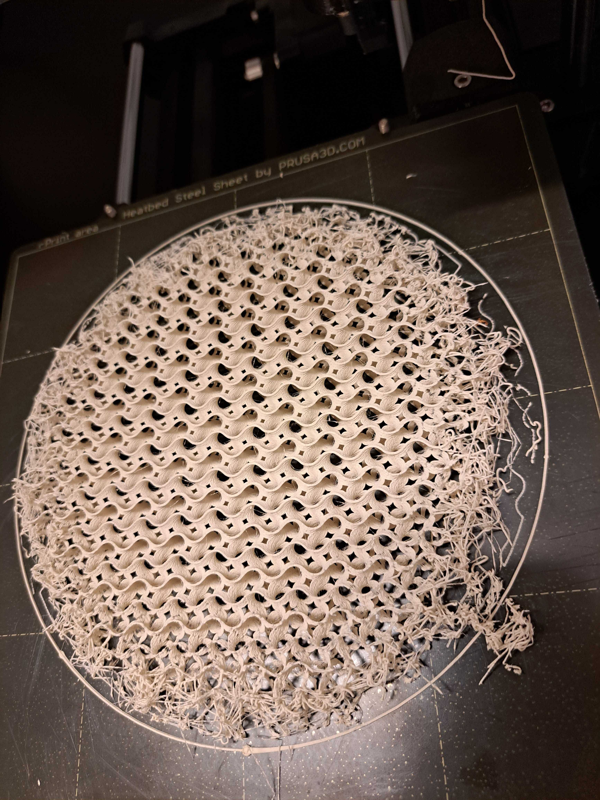
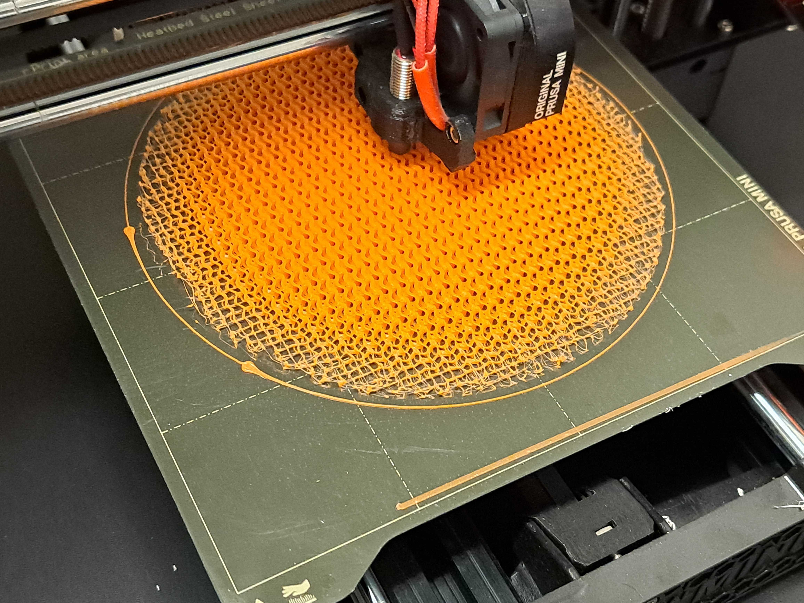
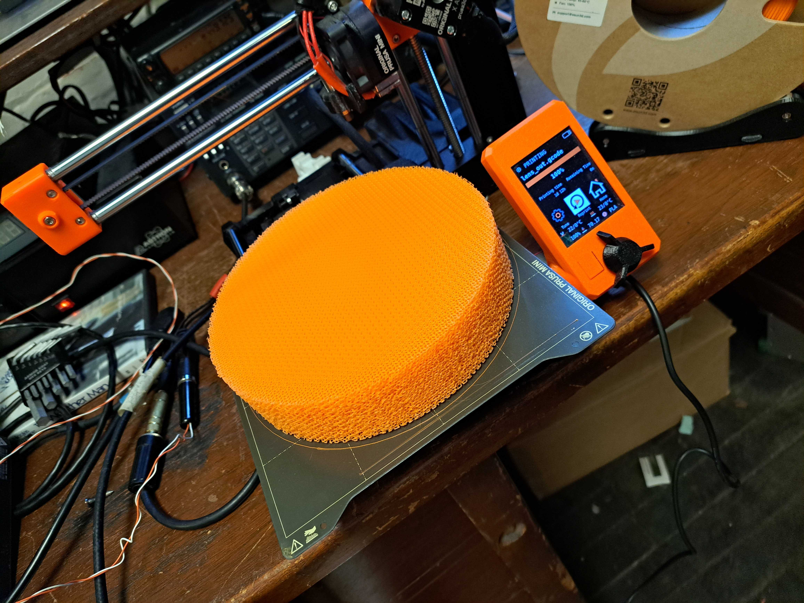
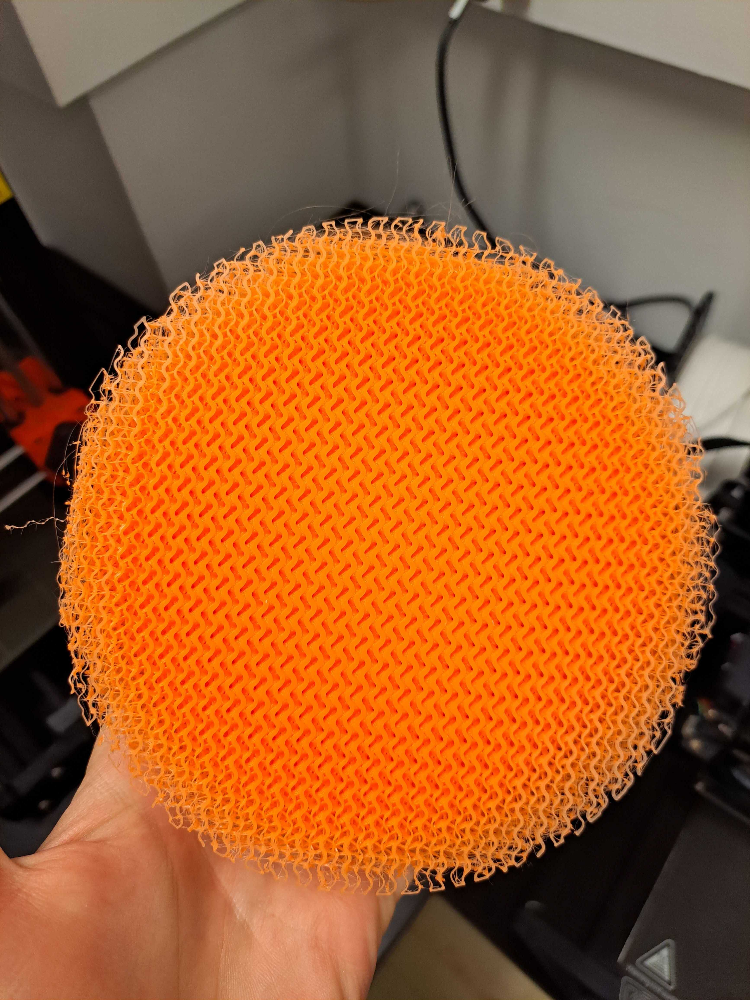
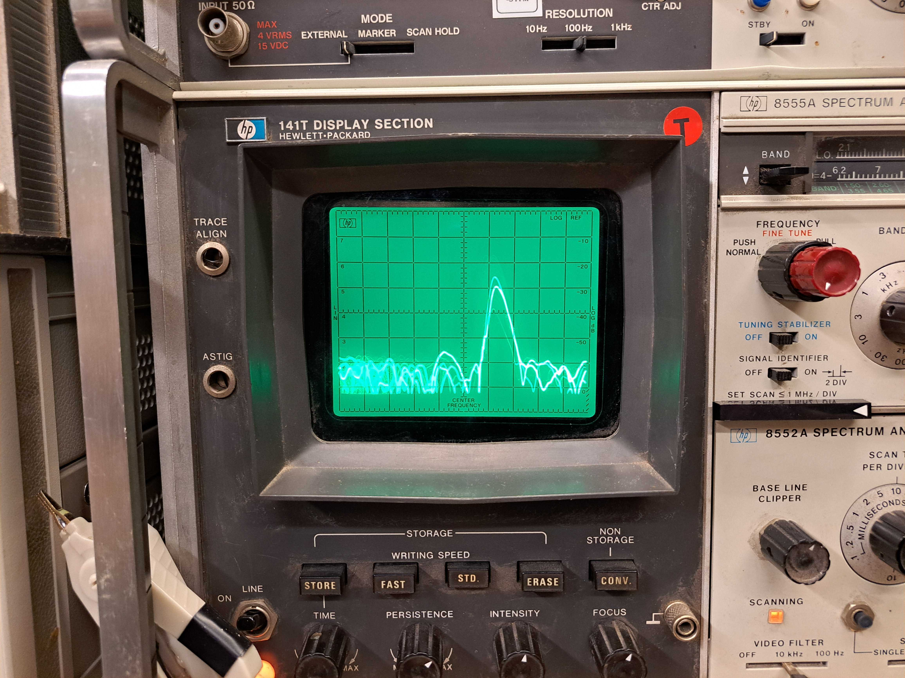
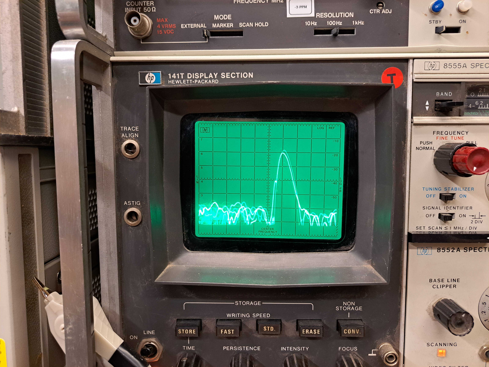
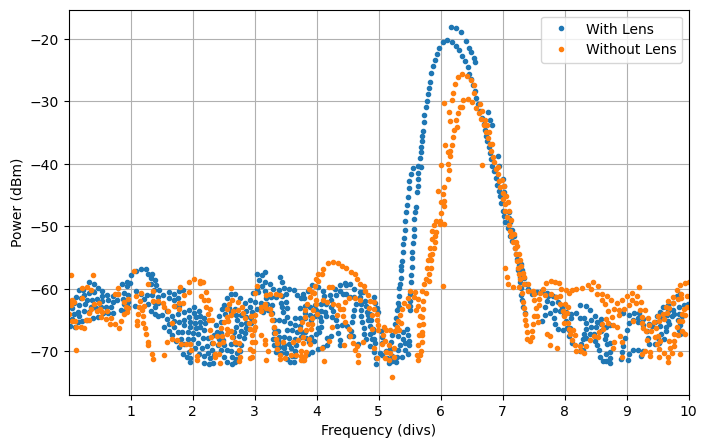

After watching the Machining and Microwaves video, we decided to buy some Zetamix dielectric 3D printer filament and give 3D printing a dielectric lens a shot.
After playing around with MS Lattice, we decided that a more nuanced approach was more appropriate for FDM printing, because the limited resolution of
the FDM printers means that they struggle to get the ratio of plastic to air correct using the mesh geometry alone. A few people online have described modulating
the extrusion multiplier to achieve variable density in their parts, and so I decided to give that a shot instead. I'm using the gyroid infill pattern
from prusaslicer because it breaks one "line" of infill into many smaller gcode instructions, giving us a higher resolution. My script finds the center of each
extrusion GCode command, looks up the desired density at that point, and scales the extrusion multiplier to the correct value. You can find the code here:
W1XM RF Cheese Repo.

In practice, printing with the zetamix is terrible: it's super crumbly. Another issue is that for Luneberg lenses, the desired dielectric constant has a maximum
value of 2, and with Dk=7.5, the entire print is very low density. After playing with the zetamix for a while, we decided to try regular PLA instead, which should
have a Dk of about 2.7. It will be slightly higher loss, and much more moisture sensitive, but for us these tradeoffs did not outweight the improved strength of
the lens and the better Dk.


We printed a Wood lens, which looks hilariously like a giant block of orange cheese. To test it, we set up a 10GHz signal generator and microwave spectrum analyzer
with two identical X Band horns, separated by a few meters and pointed at each other. We measured the amplitude of the received signal with the lens positioned so
that one of the horns was located at the predicted focal point, and with the lens removed. I put these photos into webplotdigitizer for better visualization.




The lens seems to work very well, with nearly 10dB of gain. We also printed a Luneberg lens, but tragically ran out of PLA while printing the second half.